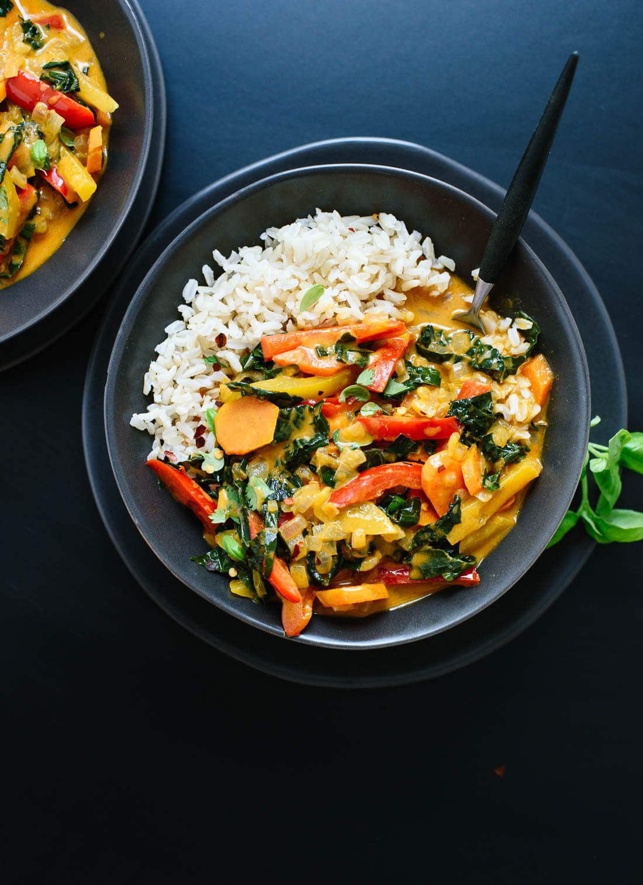

Thai Red Curry

Description
Thai red curry is a classic and beloved dish from Thailand, known for its bold flavors and vibrant colors. It features a creamy and spicy curry sauce made with a base of red curry paste, coconut milk, and an assortment of herbs and spices. Typically, it's cooked with a protein such as chicken, shrimp, or tofu, along with vegetables like bell peppers, bamboo shoots, and eggplant. The curry is simmered until the ingredients are tender and infused with the aromatic flavors of lemongrass, galangal, and kaffir lime leaves. Served over steamed rice, Thai red curry offers a delicious balance of heat, sweetness, and tanginess that makes it a favorite among food enthusiasts worldwide.
Ingredients
- 1 ¼ cups brown jasmine rice or long-grain brown rice, rinsed
- 1 tablespoon avocado oil or olive oil
- 1 small white onion, chopped (about 1 cup)
- Pinch of salt, more to taste
- 1 tablespoon finely grated fresh ginger (about a 1-inch nub of ginger)
- 2 cloves garlic, pressed or minced
- 1 red bell pepper, sliced into thin 2-inch long strips
- 1 yellow, orange or green bell pepper, sliced into thin 2-inch long strips
- 3 carrots, peeled and sliced on the diagonal into ¼-inch thick rounds (about 1 cup)
- 2 tablespoons Thai red curry paste
- 1 can (14 ounces) regular coconut milk
- ½ cup water
- 1 ½ cups packed thinly sliced kale (tough ribs removed first), preferably the Tuscan/lacinato/dinosaur variety
- 1 ½ teaspoons coconut sugar or turbinado (raw) sugar or brown sugar
- 1 tablespoon tamari or soy sauce
- 2 teaspoons rice vinegar or fresh lime juice
- Garnishes/sides: handful of chopped fresh basil or cilantro, optional red pepper flakes, optional sriracha or chili garlic sauce
Steps
- Prepare all ingredients: red curry paste, coconut milk, protein (chicken, tofu, or shrimp), vegetables (bell peppers, bamboo shoots, eggplant), garlic, ginger, and lemongrass.
- Heat oil in a pan, sauté minced garlic, ginger, and sliced lemongrass until fragrant. Add protein, cook until browned or partially cooked through.
- Stir in red curry paste, adjust spiciness to taste. Cook for a few minutes.
- Pour coconut milk, mix well. Add vegetables, simmer until tender.
- Remove from heat, serve hot over steamed rice. Garnish with Thai basil leaves and sliced red chilies if desired. Enjoy your Thai red curry!